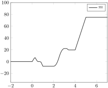
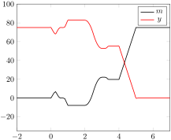

It felt like there was a lot of new information introduce here for the session that concludes "Part II". This reminds me of my undergraduate research study where I had my first crash course in topology. In fact, flipping back to the start of book reveals the following warning: "Exceptionally, Session 10 is intended to give the reader a taste of more sophisticated applications; mastery of it is not essential for the rest of the book."
As I was reading this week, I also felt reminded of Problem 1* from the Quiz. This idea that we can compare the size of infinite sets like \(\mathbb{R}\) and \(\mathbb{Z}\) using the language of retractions seems analagous to the formalation of Brouwer’s theorems. I’m expecting the proofs in this section to follow a similar format, even though this notion of a "continuous maps" seems a little informal at the moment.
Example3.12.1.Exercise 1:.
Let \(j: C \longrightarrow D\) be, as before, the inclusion of the circle into the disk...
Solution.
We’re given that we have two continuous maps \(D \mathrel{\substack{f \\[-0.6ex]
\textstyle\longrightarrow \\[-0.6ex]
\textstyle\longrightarrow \\[-0.6ex]
g}} D\) and that \(g \circ j = j\text{.}\) We want to show that there’s some point \(x \in D\) such that \(f(x) = g(x)\) We’re also told to use the retraction theorem, and the revelevant one states that "there is no continuous map which is a retraction for j".
Let’s suppose for a second that the opposite were true: \(f(x) \neq g(x)\) for every \(x \in D\text{.}\) Since these two points are different, we can construct an arrow using one of them as the "tail" and one as the "head". We can define a map \(r: D \longrightarrow C\) that follows this arrow until it reaches the boundary point on the circle like so:
Figure3.12.2.Construction diagram for our map \(r\)
Since we’re guaranteed to have \(r(x) \in C\text{,}\) let’s see what happens when we compose \(j\) with it. If we could prove \(r \circ j = 1_C\text{,}\) we’d have a contradiction and be done, but it’s not clear that’s the case quite yet. I think the key to this lies in the fact that \(g \circ j = j\text{.}\) In the text, they proved the special case where \(g = 1_D\text{.}\) This is a slightly more relaxation condition to show that \(g\) doesn’t need to be the identity everywhere — it just needs to be the identity on the edge of the disk where it meets the circle.
I’m thinking of like taking a sample \(b\) from the embedding of \(C\) rather than from \(D\) at large. The text used the notation \(\mathbf{1} \xrightarrow{b} C\) to show this operation. Once we’ve chosen that \(b\text{,}\) we can apply the map \(j\) to aquire our point \(x\) on the edge of the disk.
Since \(C \subset D\text{,}\) the rule that \(f(x) \neq g(x)\) still applies, but if we force \(g\) to be the "head" of the arrow then we’ll have an arrow whose "head" lies on the boundary, which also happens to be the same point we originated from.
Figure3.12.3.Construction diagram for our map \(r\)
Being able to follow the points back to their origins like this essentially gives us a retraction for \(j\text{.}\) However, we already know such retraction can’t exist! This means that our assumption that \(\forall x \in D: f(x) \neq g(x)\) is false, which is logically equivalent to the assertion that \(\exists x \in D: f(x) = g(x)\text{.}\) QED.
I must admint, this all feels a little "hand wavy" still. I’m not really sure how much of Euclidean geometry I’m projecting onto the situation. I think this is also a good spot to point out the "antipodal" map that we’d get by swapping the head and tail of our arrow between \(f(x)\) and \(g(x)\text{:}\)
Figure3.12.4.Construction diagram for our antipodal map \(a\)
I’d expect this map to have some fun properties. The one situation where we’d have an endomap on the circle with no fixed points is the one that maps each point to the one opposite it, but this needs a fixed point for us to reflect over. I think this is going to be important later.
Example3.12.5.Exercise 2:.
Suppose \(A\) is a ’retract’ of \(X\text{...}\)
Solution.
Let’s sort through our givens here. We know we have \(A \mathrel{\substack{s \\[-0.6ex]
\textstyle\longrightarrow \\[-0.6ex]
\textstyle\longleftarrow \\[-0.6ex]
r}} X\) with \(r \circ s = 1_A\text{.}\) We also know that \(X\) has a fixed point property: for every endomap \(X \xrightarrow{f} X\) there exists some \(T \xrightarrow{x} X\) with \(f x = x\text{.}\) We want to show that \(A\) has the same property for maps from \(T\text{.}\)
Let’s start by having a look at the class of endomaps \(A \xrightarrow{g} A\text{.}\) Each map \(g\) must have some corresponding map \(f\) given by \(f = s \circ g \circ r\text{.}\) We can apply \(r\) on the left and \(s\) on the right to get an equivalent expresson for \(g\) in terms of \(f\text{:}\)
\begin{equation*}
f = s \circ g \circ r
\end{equation*}
\begin{equation*}
\implies r \circ f \circ s = r \circ s \circ g \circ r \circ s
\end{equation*}
\begin{equation*}
\implies r \circ f \circ s = 1_A \circ g \circ 1_A
\end{equation*}
\begin{equation*}
\implies r \circ f \circ s = g
\end{equation*}
Since this map \(f\) has some fixed point \(x\) such that \(f x = x\text{,}\) there must be some corresponding point in \(A\) given by \(y = s x\) that has this property for \(g\text{.}\) It should then follow that \(y = s x\) is a fixed point of \(g\) satisfying.
\begin{equation*}
g (y) = g \circ s (x)
\end{equation*}
\begin{equation*}
= (s \circ f \circ r) \circ s (x)
\end{equation*}
\begin{equation*}
= s \circ f \circ r \circ s (x)
\end{equation*}
\begin{equation*}
= s \circ f \circ (r \circ s) (x)
\end{equation*}
\begin{equation*}
= s \circ f \circ 1_A (x)
\end{equation*}
\begin{equation*}
= s \circ f (x)
\end{equation*}
\begin{equation*}
= s \circ x = y
\end{equation*}
Having proven that \(g y = y\text{,}\) we’ve established our fixed point property and I think we’re done.
Example3.12.6.Exercise 3:.
Use the result of the preceeding exercise, ...
Solution.
Let’s recap the last exercise: Given "A is a retract of X" (\(\exists A \mathrel{\substack{s \\[-0.6ex]
\textstyle\longrightarrow \\[-0.6ex]
\textstyle\longleftarrow \\[-0.6ex]
r}} X \text{such that} r \circ s = 1_A\)) and "X has the fixed point property for maps from T" ( \(\forall X \xrightarrow{f} X: \exists T \xrightarrow{x} X\) such that \(f(x) = x\)), it follows that "A also has the fixed point property" ( \(\forall A \xrightarrow{g} A: \exists T \xrightarrow{y} A\) such that\(g(y) = y\)).
In the case of theorem (1), we can assume the premise "Let \(I\) be a line segment including its endpoints (\(I\) for Interval) and suppose \(f: I \longrightarrow I\) is a continuous endomap. Then \(f\) must have a fixed point: a point \(x\) in \(I\) for which \(f(x) = x\text{.}\)"
We’re attempting to show that this is sufficient to imply the corresponding retraction theorem: "Consider the inclusion map \(j: E \longrightarrow I\) of the two-point set \(E\) as boundary of the interval \(I\text{.}\) There is no continuous map which is a retraction for j."
Since \(E\) is a two-point set, perhaps we can use the fact that there are only four possible endomaps that can exist in that space. These are illustrated below:
Figure3.12.7.Possible endomaps on two point space
Of these four maps, precisely one has the property of "having no fixed point". This antipodal map sends each of the points in \(E\) to the "opposite" point. For the sake of convenience, let’s can name these points \(E = {0, 1}\text{.}\) The antipodal map \(E \xrightarrow{a} E\) is equivalent to the operation \(a(x) = 1 - x\text{,}\) with the other maps being given by \(1_A\text{,}\)\(\mathbf{1} \rightarrow \{0\}\text{,}\)\(\mathbf{1} \rightarrow \{1\}\text{.}\) This is the unique endomap on \(A\) satisfying \(a \circ a = 1_A\text{.}\)
I’m thinking the easiest way to approach this is to assume we have some map \(I \xrightarrow{f} I\) that acts like our "antipodal" map sending each point to it’s mirror on the other half of the interval. For us to have any notion of continuity on this interval, we’d need to be able to take an arbitrarily small step to one side of each endpoint so we should be able to take the opposite step from the other. In other words, for any \(\epsilon > 0\text{,}\) we can pair \(0+\epsilon\) with \(1-\epsilon\text{.}\) Using the interval \([0,1]\) and \(a(x) = 1 - x\) as this operation, it’s easy to see that \(a\) produces a fixed point in the middle at \(x=0.5\) where it’s equidistantant from the endpoints \(\{0,1\}\text{.}\)
If any map on this interval was going to "have no fixed point", it would have needed to be an antipodal map. In order for any map \(r: I \longrightarrow E\) to possibly satisfy \(r \circ j = 1_E\text{,}\) it needs to divide the points into two sections. Our map either needs to map "0.5" to itself or to leave it undefined altogther. If we have arrows going from 0 to 1 and arrows from 1 to 0, at some point along the way the "heads" of our arrows need to go past the "tails" coming from the opposite direction.
Perhaps this makes more sense if I step back a bit and state something "obvious": There is no retraction from \(E\) to \(\mathbf{1}\text{.}\)\(E\) has two points while \(\mathbf{1}\) has one. \(E\)might have a section, in which case we have one of the two bottom diagrams in the possible endomaps figure above. This would be our map that takes the fixed point and sends it to itself. We can go from \(1
\longrightarrow E \longrightarrow 1\text{,}\) but we make \(1_E\) by going from \(E \longrightarrow 1
\longrightarrow E\) because there simply aren’t enough points to work with.
It sounds like a variation of the intermediate value theorem. If there’s a path of arrows leading from 0 to 1, then we should be able to reverse it and follow the arrows from 1 to 0. When we do, either there needs to be some fixed point that connects the heads from one path to the tails from the other or we don’t have a continuous path —we jump!
In summary:
The only endomap on \(E\) with no fixed point is the antipodal map.
The only endomap on \(I\) that could potentially not have a fixed point would be the antipodal map.
The antipodal map on \(I\) has a fixed point.
There is no endomap on \(I\) without fixed point.
Any retract preserves fixed points.
There is no retract from \(E\) to \(I\)
If it sounds like I’m unsure at this point, that’s because I am. Maybe attempting the second theorem will provide more insight.
For (2) we’re given that any continuous endomap on the closed disk, \(D\) must have a fixed point. We want to prove that there is no continuous map which is a retraction for the inclusion map \(j : C \longrightarrow D\) of the circle into the disk.
I think we can develop a similar definition of an "antipodal map" on the circle by reflecting across the center of the disk. This map \(C \xrightarrow{a} C\) is a unique endomap on \(C\text{.}\) It has no fixed points for the circle — \(\forall x
\in C: a(x) \neq x\) — and acts as it’s own inverse — \(a \circ a = 1_C\text{.}\) We can extend this map to the disk, but it fails to provide an inverse for the point at the center which we reflected over. Our antipodal map is the only possible section of the disk’s boundary, but it fails to be a retraction due to this "missing" point in the middle.
A similar line of reasoning should hold true for the sphere. The antipodal map reflects each point on the sphere across the center to the opposite side. It’s the only possible section that doesn’t fix any points on the sphere, but then any corresponding retraction on the ball would be missing the center or have a fixed point there.
After all that, I’m still a little uncertain about this. I’m not convinced my proof is correct, but I also won’t find out one way or the other unless I keep moving. So, on we go.
Example3.12.8.Exercise 4:.
Express the restrictions given above on my travel and yours...
Solution.
Story time! I’m chilling in Buffalo on a Friday morning when I get a call from a friend and decide to take a road trip to Rochester to vist them. So at noon, I jump in the car and start heading there, but I remember I left my wallet! I bust a U and go back home to look for it. By the time I find it, my tummy is growling. I head over my favorite taqueria for a bite. It’s a little out of my way, but the salsa is to die for. I finally get on the road again, but now everyone is getting out of work so I hit some nasty traffic on the way. After crawling along a snail’s pace for a few hours I’m starting to get tired and need to use the restroom. I make a quick detour to a little cafe I just passed. By the time I’m back on the road again, traffic has cleared up and it’s a straight shot to Rochester at 5:00pm. My trip might look something like this:

Figure3.12.9.Sample map corresponding to "my" story
Okay, maybe I got carried away, but this is "my" story. It has a beginning, in Buffalo at noon and it has an end, in Rochester at 5:00pm. In the figure above, the horizontal axis is the time in hours since my departure, and the vertical axis in the distance in miles along the road. Note that in my story, I double back for tacos, which is why there’s a section in the map with negative distance. "Your" story might be a little different, but what I do know is that you were "somewhere on the road between Buffalo and Rochester" for the entire duration. For now, let’s suppose you just drive back a forth along some stretch of road in the middle like so:
Figure3.12.10.Sample map corresponding to "your" story
It should be obvious in this case that our paths have to cross, but we’re trying to generalize these maps as much as possible. For now, let’s start giving some of these objects proper names.
Let \(E_t = \{t_0,t_1\}\) be our start time and end time for "endpoints" of the trip in "time". Let \(E_p = \{p_0,p_1\}\) be Buffalo and Rochester, our "endpoints" on the "road". Since both time and space are continuous, these endpoints can be included in the respective intervals \(I_t\) and \(I_p\text{.}\) Let’s call the inclusion map on the "time"-line to be \(j_t : E_t \longrightarrow I_t\) and the inclusion map on the "position"-line to be \(j_p : E_p \longrightarrow I_p\text{.}\) Note that Brouwer’s 1st Theorem says there can’t exist any retractions for either of these maps.
My position at any given time is a map \(m: I_t \longrightarrow I_p\) that needs to satisfy certain conditions. I know \(m(t_0)=p_0\) and \(m(t_1)=p_1\text{:}\) that at the start of my trip I’m in Buffalo and at the end I’m in Rochester. Note that since our endpoints are included: \(m j_t = j_p\text{.}\)
The premise of this thought experiment is based around the idea that if "you" also have a map \(y: I_t \longrightarrow I_p\) we must necessarily meet somewhere in that "space-time". We’re using some kind of "freeway distance", where my ’location’ sticks to the exit I took off it when I needed to make a stop.
Maybe "you" lived your entire life in Buffalo such that your \(y t = p_0 \forall t \in I_t\text{,}\) our meeting place would be at the start of of my trip or some time prior! In the other extreme, maybe you’ve lived your entire life in Rochester and your \(y t = p_1 \forall t \in I_t\text{.}\) In this case, "you meeting me" is contigent on "me deciding to make the trip" and we "meet" at 5:00pm. It’s also possible you’ve never been to either Buffalo nor Rochester but live some place along the way, or maybe have been to one but not the other. In any of these cases, we can can map your position to some sub-interval of \(I_p\) for the entire time period \(I_t\text{.}\)
What I’m going to argue is that if you have such a map and we never meet we can construct a continuous retraction from \(r: I \longrightarrow E\) with no fixed point. Since Brouwer’s theorem establishes that such a retraction can’t exist, there must be some \(\mathbf(1) \xrightarrow(x) I_t\) with the property \(m x = y x\text{.}\)
First, let’s rule out the "easy maps". Suppose I hadn’t doubled back at all and moved steadily from Buffalo to Rochester so that my path is invertable — I have a unique position for every time. We’d be able to use your map construct endomap on \(I_t\) through the composition given by \(I_t \xrightarrow{y} I_p \xrightarrow{m^{-1}} I_t\text{.}\) Our fixed point theorem says any continuous endomap has a fixed point, so there’s some \(x\) with \((m^(-1) \circ y) x = x\text{.}\) Apply \(m\) on the left side to get \(m \circ (m^(-1) \circ y) x = y x = m x\text{.}\) We meet at time \(x\) and position \(y x = m x\text{.}\)
What if your map is invertable? Well, then we could use it to construct an endomap on \(I_p\text{.}\) We compose \(I_p \xrightarrow{y^{-1}} I_t \xrightarrow{m} I_p\text{.}\) This implies there’s some fixed point \(\mathbf{1} \xrightarrow{x} I_p\) with \((m \circ y^{-1}) x = x\text{.}\) Note that our spaces are different, so here we meet at time \(y^{-1} x\) and position \(x\text{.}\)
There is however, one map that might have the property \(m x = y x \forall t \in I_t\text{.}\) Imagine my "evil twin". This twin starts in the opposite city and takes the opposite that I do along the way. If \(any\) map is going to avoid coming into contact with me at every step in my journey, it would have to be him. He takes every step I do, but in the opposite direction! This is the composition of my map with the "antipodal map" on \(I_t\)— it takes every moment in my journey in reverse. If my map is continuous, so is my evil twin. If there’s a sequence of arrows, we can reverse them.
We’ve already established that my journey is not invertable, so it stands to reason that my evil twin would also have that property. But check this out, even me and my evil twin need to meet!

Figure3.12.11.My "evil twin" map
The composition of the antipodal map \(a_t\) on \(I_t\) followed my \(m\) must be the same as \(m\) followed by the antipodal map \(a_p\) on \(I_p\text{.}\) My trip needs to be reversable, but we’ve already shown that it can’t be. The fixed point theorem says me and my evil twin have to either meet or jump over each other — the map can’t be continuous without the meet-up!
I’m thinking that we can use the meeting place of myself and my evil twin as an approximation for the midpoint of my journey. Your map needs to have some evil twin midpoint also. If we alternate "halfway points", we should be able to do something of a binary search to home in on each other’s location in terms of whether we’re closer in the front or back half of our respective trips. Essentially, we’d have an analogue for the mean value theorem.
I think this is about as close as I’m going to get for "an answer" to (a) and (b) for the week. I’m not really sure how I would generalize it further for (c) and (d). I feel like right now there’s a glaring weak spot in my argument by even assuming \(y: I_t \longrightarrow I_p\) is well-defined for the entire space. What if "you" were born or died sometime during my trip? Would I still necessarily "meet" you?
The thing that I’m left curious is about the connection between Brouwer’s theorems and my notions about simplices. I’m used to this idea of going from a point \(S_0\text{,}\) to a line segment \(S_1\text{,}\) to a triangle \(S_2\text{,}\) to a tetrahedra \(S_3\text{,}\) and then generalizing to higher dimensional spaces \(S_n\) from there. There seems like an obvious parallel to Brouwer’s first theorem that says we can’t have a retraction from \(S_1\) to \(S_0\text{,}\) or from any \(S_n\) to \(S_m\) with \(m \leq n\) for that matter.
Having "attempted" all of the exercises in the session, I think I’ll stop here. I feel like I could easily spend another week on this session, but since the authors explicitly state it’s not important I’ll take them for their word. They obviously have spent a lot more time on it than I have. I didn’t even have time to proofread myself this week!